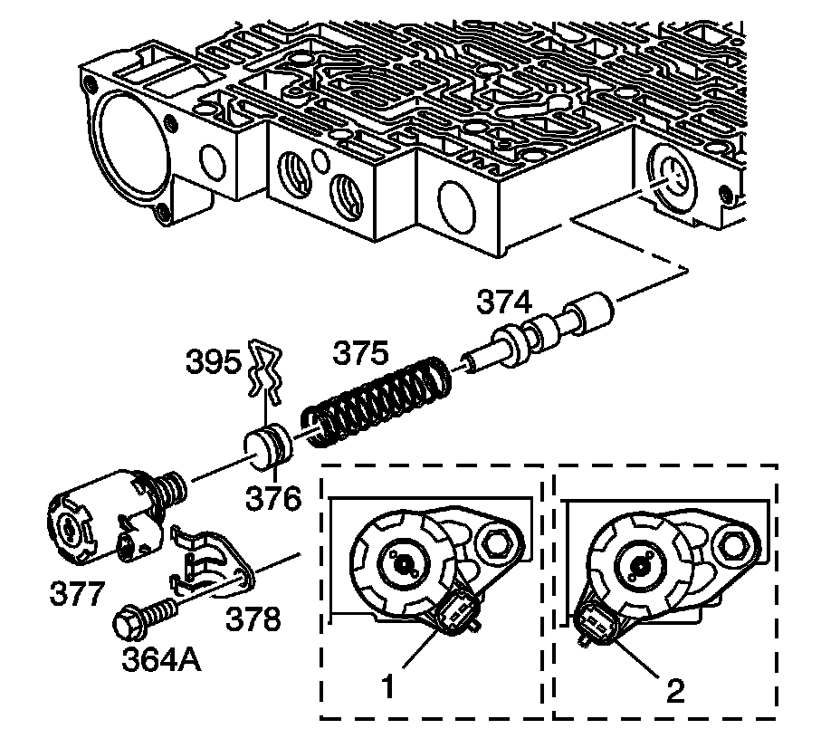

Control Valve Body Assemble
Control Valve Body Assemble
Inspection Procedure
1. Inspect the valve body to spacer plate gasket for valve body channel witness marks. The witness marks should be complete. Incomplete witness marks may be caused by an uneven case surface. Incomplete witness marks may also be caused by cross-channel leaks.
2. Inspect the valve body casting for the following conditions:
^ Porosity
^ Cracks
^ Damaged machined surfaces
^ Chips or debris
Cleaning Procedure
1. Clean all the valves, springs, bushings, and the control valve body in clean solvent.
2. Dry all the parts using compressed air.
Installation Procedure

Caution: Refer to Valve Springs Can Be Tightly Compressed Caution.
Important: Lubricate all parts with DEXRON(R)VI automatic transmission fluid before installation.
1. Install the following items:
1. The isolator valve (398)
2. The regulator apply spring (397)
3. The regulator apply valve (380)
4. The bore plug (381)
5. The bore plug retainer (395)
2. Install the following items:
1. The 4-3 sequence valve spring (382)
2. The 4-3 sequence valve (383)
3. The 3-4 relay valve (384)
4. The bore plug (381)
5. The bore plug retainer (395)

3. Install the following items:
1. The 3-4 shift valve (385)
2. The 3-4 shift valve spring (386)
3. The bore plug (381)
4. The bore plug retainer (395)

4. Install the following items:
1. The reverse abuse valve (387)
2. The reverse abuse valve spring (388)
3. The bore plug (359)
4. The coiled spring pin (360)
5. The 3-2 downshift valve (389)
6. The 3-2 downshift valve spring (390)
7. The bore plug (381)
8. The bore plug retainer (395)

Notice: Be sure all solenoids are installed with the electrical connectors facing the non-machined (cast) side of the valve body; otherwise, the solenoids will bind against the transmission case as the valve body bolts are tightened and damage may occur.
5. Install the following items:
1. The 3-2 control valve spring (392)
2. The 3-2 control valve (391)
3. The 3-2 control solenoid (394)
4. The solenoid retainer (395)

Notice: Be sure all solenoids are installed with the electrical connectors facing the non-machined (cast) side of the valve body; otherwise, the solenoids will bind against the transmission case as the valve body bolts are tightened and damage may occur.
6. Install the following items:
1. The actuator feed limit valve (374)
2. The actuator feed limit valve spring (375)
3. The bore plug (376)
4. The bore plug retainer (395)
5. The pressure control solenoid (377)
^ 1 - Colorado/Canyon
^ 2 - All other models
6. The solenoid retainer (378)
Notice: Refer to Fastener Notice.
7. The solenoid retainer bolt (364)
Tighten the bolt to 8-14 N.m (6-10 lb ft).

7. Install the following items:
1. The 1-2 accumulator valve spring (370)
2. The 1-2 accumulator valve (371) in the 1-2 accumulator valve sleeve (372)
3. The 1-2 accumulator valve and sleeve assembly
4. The coiled spring pin (360)

Notice: Be sure all solenoids are installed with the electrical connectors facing the non-machined (cast) side of the valve body; otherwise, the solenoids will bind against the transmission case as the valve body bolts are tightened and damage may occur.
8. Install the following items:
1. The 2-3 shift valve (368)
2. The 2-3 shuttle valve (369)
3. The 2-3 shift solenoid valve (367B)
4. The solenoid retainer (395)

Notice: Be sure all solenoids are installed with the electrical connectors facing the non-machined (cast) side of the valve body; otherwise, the solenoids will bind against the transmission case as the valve body bolts are tightened and damage may occur.
9. Install the following items:
1. The 1-2 shift valve spring (365)
2. The 1-2 shift valve (366)
3. The 1-2 shift solenoid valve (367A)
4. The solenoid valve retainer (395)
10. Install the following items:
1. The forward abuse valve (357)
2. The forward abuse valve spring (358)
3. The bore plug (359)
4. The coiled spring pin (360)
5. The low overrun valve (361)
6. The low overrun valve spring (362)
11. Install the following items:
1. The forward accumulator oil seal (353) on the forward accumulator piston (354)
2. The forward accumulator pin (355)
3. The forward accumulator piston (354)
4. The forward accumulator spring (356)
5. The forward accumulator cover (363)
6. The forward accumulator cover bolts (364)

12. Install the manual valve (340).